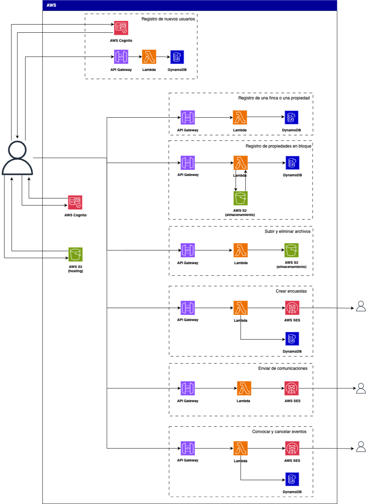
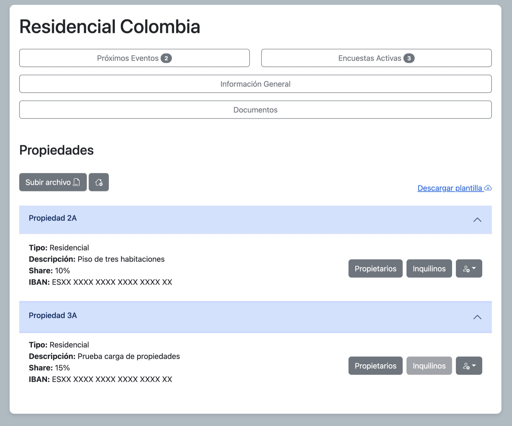

SaaS de administración de fincasProperty management SaaS


Plataforma web para digitalizar la gestión de comunidades de vecinos, un sector muy poco digitalizado. La diseñé y desarrollé de principio a fin, con tres roles: superadministrador, administrador y vecinos. Incluye propiedades, documentos, encuestas, eventos y comunicaciones por email. Aprendí AWS desde cero para el proyecto y lo construí en iteraciones hasta un MVP.Web platform to digitize residential property management, a barely digitized sector. I designed and built it end to end, with three roles: super-admin, administrator and residents. It covers properties, documents, surveys, events and email communications. I learned AWS from scratch for it and built it iteratively up to an MVP.
- Arquitectura serverlessServerless architecture
- 29 funciones Lambda29 Lambda functions
- 7 tablas DynamoDB7 DynamoDB tables
- Modelo de costes: 5.000 y 100.000 usuariosCost model: 5,000 and 100,000 users
- AWS Lambda
- API Gateway
- Cognito
- DynamoDB
- S3
- SES
- JavaScript · jQuery · Bootstrap